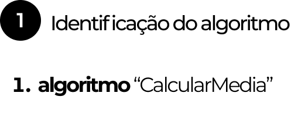
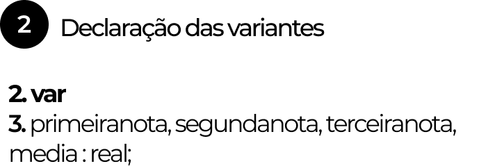

LÓGICA
Para o filósofo Copi, lógica é:
“o estudo dos métodos e princípios usados para distinguir o raciocínio correto do incorreto.”
Em outras palavras, o raciocínio lógico consiste em uma série de passos executados da melhor forma possível para atingir um objetivo.
Como em uma receita de bolo:
Fazer um bolo parece simples, mas deixar de seguir qualquer passo dessa sequência compromete diretamente no resultado final da receita.
Mais a frente você irá perceber como uma receita de bolo pode ter tudo a ver com a Lógica de Programação.
ALGORITMO
Provavelmente você já ouviu falar do termo algoritmo em algum lugar, e quando falamos algoritmo também estamos nos referindo a uma sequência lógica, que é o passo inicial da programação.
Para começarmos a definir um Algoritmo, vamos visualizar a construção de um com base numa problemática do dia a dia.
PROBLEMA: ATRAVESSAR A RUA
Esse algoritmo de um semáforo foi construído a partir de uma Descrição Narrativa, um dos tipos de representações de algoritmos que vamos explorar logo abaixo.
REPRESENTAÇÃO
DOS ALGORITMOS
Descrição Narrativa
Utiliza palavras para expressar os algoritmos e é usada exclusivamente para fins didáticos.
Exemplo:
PROBLEMA: FAZER CAFÉ
Fluxograma
Um tipo de diagrama ou representação gráfica que descreve as diferentes ações a serem realizadas durante a execução do algoritmo.
Ele auxilia na construção do raciocínio lógico e visualização de como o nosso código deve se comportar.
As simbologias comumente utilizadas:
Exemplo prático
PROBLEMA: CALCULAR MÉDIA
Pseudocódigo
É uma forma de representação semelhante à linguagem de programação, porém utilizando palavras no idioma escolhido.
A sua construção passa por três etapas:
Observe o exemplo da construção de um pseudocódigo a partir do fluxograma anterior:
Antes de iniciarmos o algoritmo, daremos um nome a ele, que tenha sentido de acordo com sua finalidade.
Agora definimos as nossas variáveis. Que podem ser entendidas como componentes de um algoritmo (sequência lógica) que auxiliam na resolução do problema.
Para entender melhor o que são variáveis, relembre do exemplo da receita de bolo.
Considere cada recepiente utilizado para armazenar os igredientes como elementos variáveis. Assim como eles podem armazenar os ovos, eles armazenam o leite, a farinha etc.
Assim também são as variáveis do nosso algoritmo. Elas armazenam dados para auxiliar a resolução de um pequeno problema, como o cálculo de uma média.
Seguindo a linha de raciocínio do exemplo anterior, primeiro precisamos adquirir os valores das notas:
Obtendo as notas, nosso algoritmo é capaz de realizar o cálculo da média e imprimir na tela do usuário o seu resultado.
Para isso, atribuímos á nossa variável media a fórmula do cálculo de média com as outras variáveis que já possuem os valores necessários para a fórmula.
NO PRÓXIMO CAPÍTULO
Com uma visão geral sobre Lógica e Algoritmos, encerramos o primeiro passo na Lógica de Programação. No próximo capítulo, vamos conhecer a Linguagem C, sua história, importância e características.
Te esperamos lá!